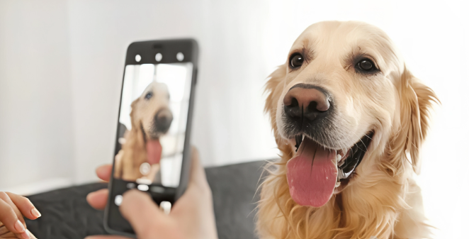
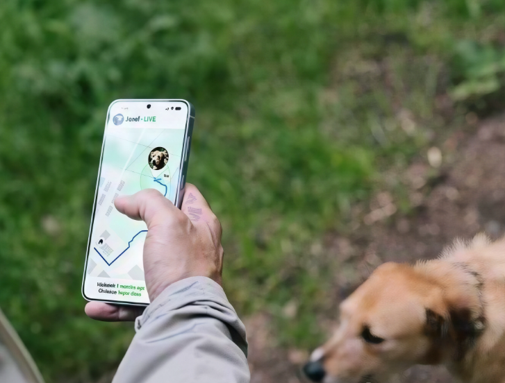
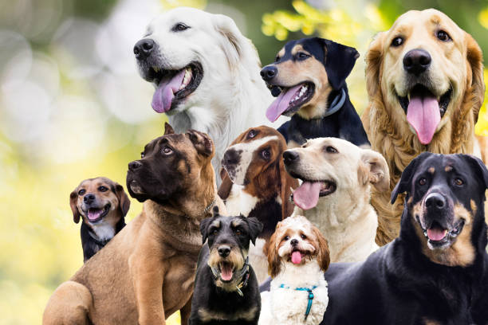

NUESTROS SERVICIOS
Todo lo que necesitas para cuidar a tu mascota y encontrarla si se pierde, en una sola plataforma.

Identifica
Registra a tu mascota en la app y dale una identidad digital con su propia placa QR, lista para que cualquiera pueda reconocerla.

Previene
Mantén la información de tu mascota al día y lista para actuar antes de que ocurra un extravío.

Recupera
Si tu mascota se pierde, quien la encuentre puede ayudarte a recuperarla con solo escanear su placa.

Comunidad
Forma parte de una comunidad de personas que cuidan y ayudan a encontrar mascotas. Con el plan Premium obtienes más beneficios.